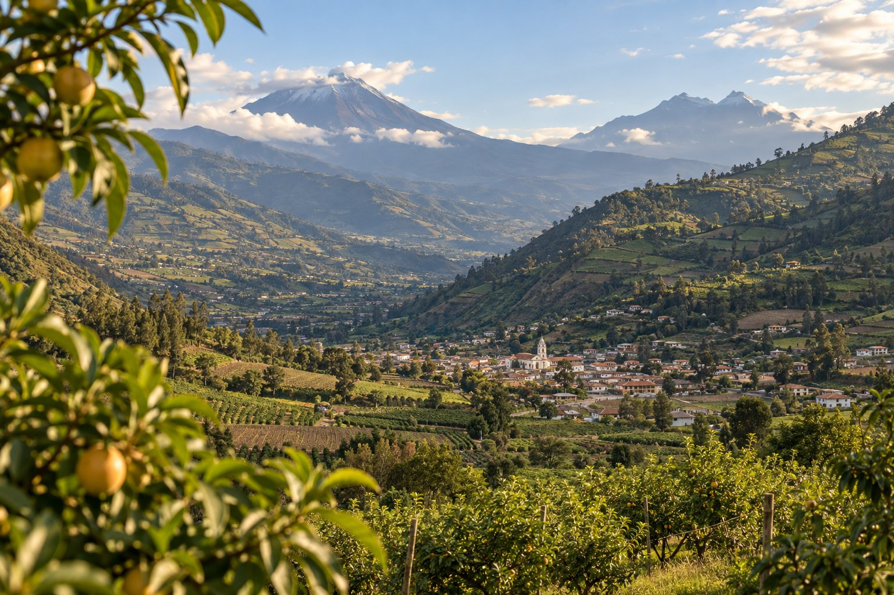

VALLE · NATURALEZA · SABORES
Patate
Un valle para bajar el ritmo y mirar alrededor.
UN DESTINO PARA RECORDAR
Un valle para bajar el ritmo y mirar alrededor.
Patate reúne paisajes de valle, zonas agrícolas y una vida local que se descubre mejor sin apuro. Es una invitación a disfrutar del entorno y sus sabores.
Frutas y productos locales
Paseos tranquilos y miradores
ANTES DE SALIR
Viaja con curiosidad
y responsabilidad.
- Consulta horarios, accesos y condiciones antes de salir.
- Respeta las indicaciones locales y el entorno natural.
- Apoya a los emprendimientos y comercios del cantón.
SIGUE EXPLORANDO